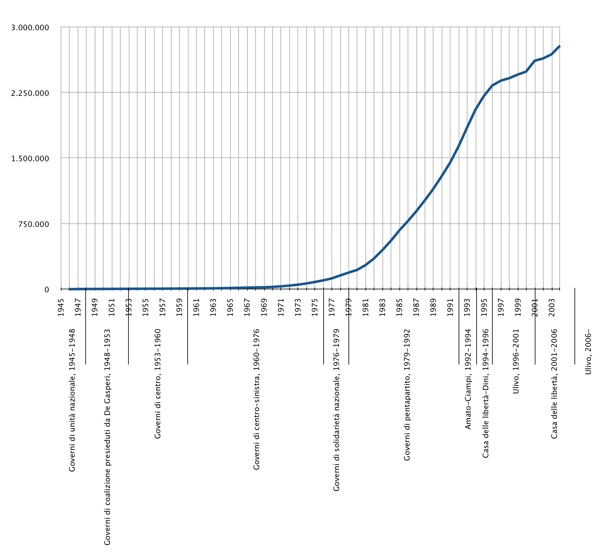
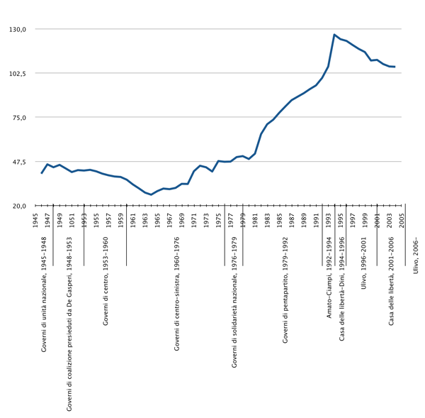
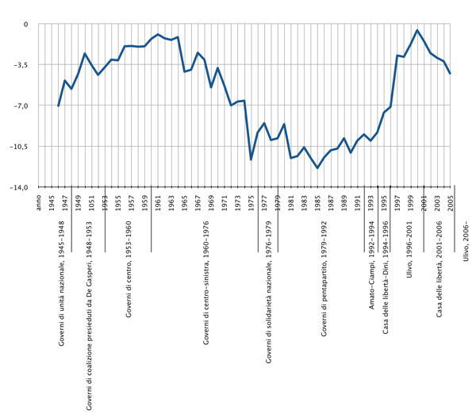
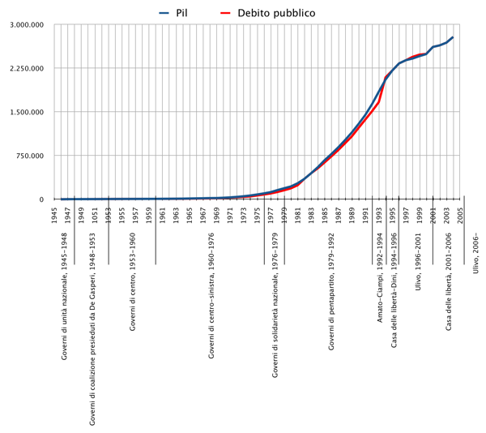
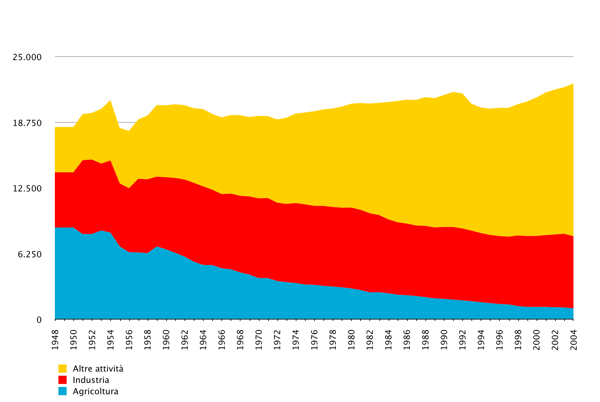

Piccola storia dell’Italia repubblicana nel contesto mondiale ed ecclesiale
a cura di Marco Bonarini
Grafici illustrativi
Prodotto Interno Lordo (PIL)
Il Prodotto Interno Lordo (PIL) è la ricchezza prodotta dal paese. Qui è espressa in miliardi di lire (1 euro=1936,27 lire)
Percentuale del debito sul Prodotto Interno Lordo
Il Debito è la somma di tutti i deficit annuali (differenza tra entrate e uscite). Per il Trattato di Maastricht esso deve tendere a non superare il 60 % del PIL.
Deficit annuale in percentuale sul Prodotto Interno Lordo
Il Deficit annuale è la differenza tra le entrate (tasse) e le uscite (spese per i vari servizi) del bilancio dello Stato. Per il Trattato di Maastricht esso deve essere inferiore al 3% del PIL
Rapporto tra debito pubblico e PIL
Il grafico esprime in miliardi di lire sia il PIL che il Debito dello Stato. Quando le due line si incrociano vuol dire che il debito è pari al 100% del PIL, evento avvenuto nel 1991.
Da allora il Debito è costantemente sopra il PIL, ciò significa che il debito è maggiore della ricchezza prodotta ogni anno.
Andamento del numero di occupati
Questo grafico indica l’andamento del numero di occupati (espresso in milioni di lavoratori) con le sue crisi e le sue riprese.
I tre colori indicano: in basso gli occupati dell’agricoltura; in mezzo gli occupati dell’industria; in alto gli occupati nelle “altre attività” (il cosiddetto terziario, o anche i servizi).